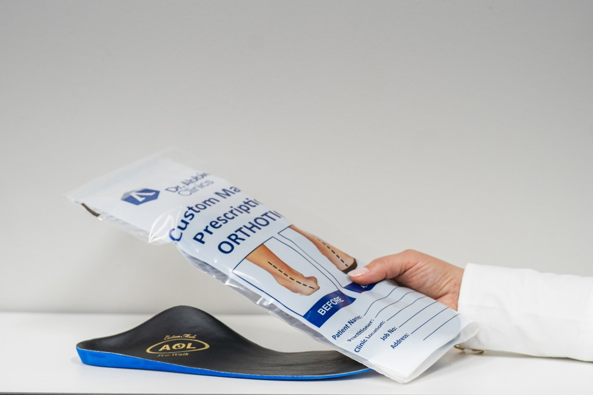

At The Bowral Foot Clinic, we specialise in custom orthotics designed to support, correct, and relieve a wide range of foot and lower limb issues. Whether you’re an athlete aiming to boost performance or someone suffering from chronic pain, our orthotics act like prescription glasses for your feet - realigning posture, correcting gait, and restoring natural function. Designed for consistent use, they offer long-term correction rather than short-term relief.
What conditions can custom orthotics help address?
- Flat feet and high arches
- Heel pain and plantar fasciitis
- Achilles tendonitis
- Knee, hip, and lower back pain
- Shin splints
- Sports injuries
- Walking or gait abnormalities
- Growing pains in children
- Diabetic foot conditions

How Can Orthotics Help You?
- We begin with a detailed biomechanical evaluation, gait analysis, and footwear check to identify the root cause of your symptoms
- When needed, we prescribe bespoke orthotics crafted to your foot shape, lifestyle, and condition - just like tailored prescription lenses.
- Orthotics are combined with hands-on treatments, strengthening exercises, and footwear guidance. We also provide regular reviews to ensure the best possible long-term results.
Orthotics aren’t a one-size-fits-all solution or a quick fix - they form part of a broader, integrated treatment strategy. Much like water flowing through a hose, orthotics guide a “stream of correction” through the body. When this corrective flow meets stiff joints or scar tissue, it creates tension elsewhere, often in the knees, hips, or back. That’s why consistent wear is essential, and why we combine orthotics with other therapies - such as manual techniques, exercise programmes, or footwear modifications - to treat the whole biomechanical chain and ensure lasting results.
Custom orthotics are prescribed in Bowral and made at the Kirrawee head office.